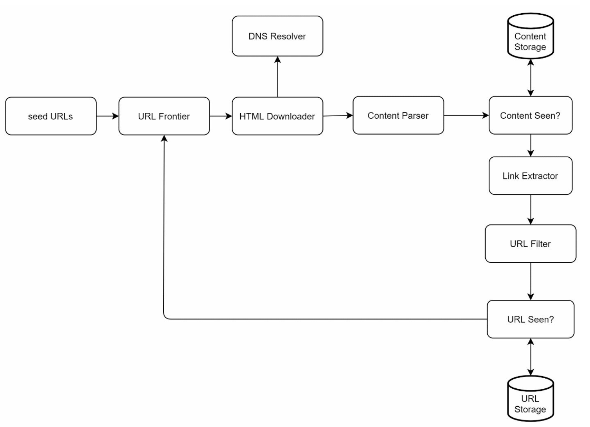
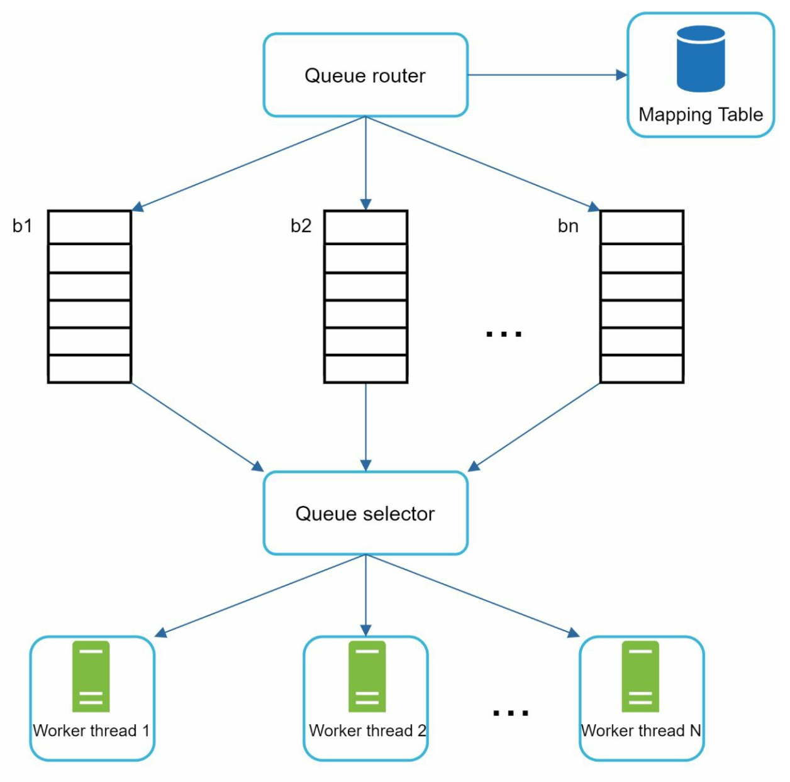
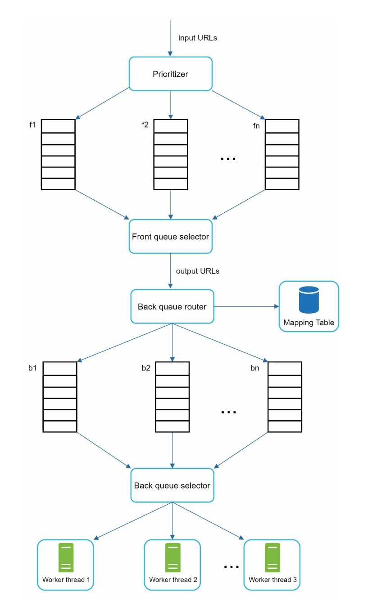
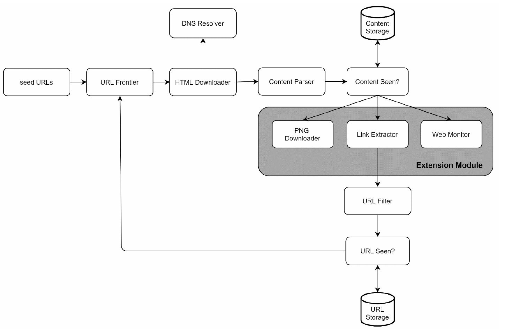

Design a Web Crawler
Search-engine scale crawler: BFS pipeline, URL frontier ki priority + politeness queues, dedup, robots.txt aur spider traps.
Introduction
Web crawler (robot / spider) search engines ka core hai — naya ya updated content (web pages, images, videos, PDFs) discover karna. Crawler kuch pages se start karta hai, unke links follow karke naya content collect karta hai.
Crawler kis kaam aata hai
- Search engine indexing: sabse common — pages collect karke local index (Googlebot).
- Web archiving: future ke liye web data preserve (e.g. US Library of Congress, EU web archive).
- Web mining: internet se knowledge nikalna — e.g. financial firms shareholder meetings/annual reports crawl karke key initiatives samajhti hain.
- Web monitoring: copyright / trademark infringement detect karna (e.g. Digimarc pirated works dhoondta hai).
Complexity scale pe depend: chhota school project kuch ghante mein; search-engine scale crawler ek dedicated engineering team ka saalon ka kaam.
Step 1: Problem aur scope
Basic algorithm
- URLs ka set diya hai → saare pages download.
- Pages se URLs extract.
- Naye URLs download list mein add. Repeat 1–3.
Clarification se mili requirements
- Purpose: search engine indexing.
- 1 billion pages/month.
- Content type: sirf HTML.
- Naye aur edited pages bhi consider karne hain.
- HTML pages 5 saal tak store.
- Duplicate content ignore.
Achhe crawler ki characteristics
| Property | Matlab |
|---|---|
| Scalability | Web bahut bada — billions of pages. Parallelization se efficient crawl. |
| Robustness | Web traps se bhara hai: bad HTML, unresponsive servers, crashes, malicious links. Crawler ko ye sab handle karna hai. |
| Politeness | Ek website pe short time mein bahut requests nahi bhejni. |
| Extensibility | Naye content types (e.g. images) support karne ke liye poora system redesign na karna pade. |
Back-of-the-envelope estimation
Pages/month : 1 billion
QPS : 1B / 30 days / 24 h / 3600 s ≈ 400 pages/sec
Peak QPS : 2 × 400 = 800
Avg page : 500 KB (assume)
Storage/month: 1B × 500 KB = 500 TB
5 years : 500 TB × 12 × 5 = 30 PBStep 2: High-level design

Components
- Seed URLs: starting point. Achhe seeds wo jinse crawler zyada se zyada links traverse kar sake. Strategy: URL space ko locality (har country ki popular websites alag) ya topics (shopping, sports, healthcare) se divide karna. Seed selection open-ended hai — koi perfect answer nahi.
- URL Frontier: download hone wale URLs ka store. Simple version mein FIFO queue. (Deep dive mein politeness + priority ke saath.) Modern crawlers state ko "to be downloaded" aur "already downloaded" mein baant'te hain.
- HTML Downloader: Frontier se diye URLs ke pages internet se download.
- DNS Resolver: URL ko IP mein translate (e.g.
www.wikipedia.org→ IP). - Content Parser: download ke baad page parse + validate — malformed pages problem create karte hain aur storage waste. Crawl servers ko slow na kare isliye alag component.
- Content Seen?: research ke mutabik ~29% web pages duplicate content hain. Same content multiple baar store na ho. Character-by-character compare slow hai (billions of pages), isliye do pages ke hash values compare karo.
- Content Storage: HTML content store. Data type, size, access frequency, life span pe depend. Zyada data disk pe (data set bada hai), popular content memory mein latency kam karne ke liye.
- URL Extractor (Link Extractor): HTML se links parse; relative paths ko absolute banata hai (e.g.
/wiki/Cong→https://en.wikipedia.org/wiki/Cong). - URL Filter: kuch content types, file extensions, error links aur blacklisted sites ke URLs exclude.
- URL Seen?: track karta hai ki URL pehle visit hua ya Frontier mein hai. Same URL baar-baar add hone se server load aur infinite loops ka risk. Bloom filter aur hash table common techniques.
- URL Storage: already visited URLs store.
Workflow
- Seed URLs → URL Frontier.
- HTML Downloader Frontier se URLs ki list fetch karta hai.
- Downloader DNS resolver se IP leke download start karta hai.
- Content Parser HTML parse karke check karta hai page malformed to nahi.
- Parsed + validated content "Content Seen?" ko.
- Content Seen? check karta hai HTML storage mein already hai: haan → discard; nahi → Link Extractor ko.
- Link Extractor links nikaalta hai.
- Links URL Filter ko.
- Filtered links "URL Seen?" ko.
- URL storage mein already hai → kuch nahi karna (already processed).
- Nahi hai → URL Frontier mein add.
Step 3: Design deep dive
DFS vs BFS
Web ko directed graph socho: pages = nodes, hyperlinks (URLs) = edges. Crawl = graph traversal. DFS achha choice nahi kyunki depth bahut gehri ho sakti hai. Isliye BFS (FIFO queue) common hai. Lekin standard BFS ki do problems:
- Impolite: ek page ke zyada links usi host ke hote hain (e.g. Wikipedia ke internal links). Parallel crawl karne pe us host pe requests ka flood — "impolite", DoS jaisa lag sakta hai.
- Priority nahi: standard BFS URL ki priority nahi dekhta. Saare pages ki quality/importance same nahi — PageRank, web traffic, update frequency se prioritize karna chahiye.
URL Frontier (deep)
Frontier ek data structure hai jo to-be-downloaded URLs store karta hai, aur politeness, priority, freshness ensure karta hai.
Politeness
General idea: ek host ka ek time pe ek page download, aur do download tasks ke beech delay. Implementation: hostname → download (worker) thread mapping. Har downloader thread ki alag FIFO queue, aur wo sirf us queue ke URLs download karta hai.

- Queue router: ensure karta hai ki har queue (b1…bn) mein same host ke URLs hon.
- Mapping table: host → queue. e.g.
wikipedia.com → b1,apple.com → b2,nike.com → bn. - FIFO queues b1…bn: har queue ek host ke URLs.
- Queue selector: har worker thread ek FIFO queue pe mapped; selection logic yahan.
- Worker thread 1…N: same host se sequentially download; do tasks ke beech delay.
Priority
Apple products ke random forum post ka weight Apple homepage se bahut kam hai, dono mein "Apple" keyword ho to bhi. URLs ko usefulness ke hisaab se prioritize karo — PageRank, website traffic, update frequency.

- Prioritizer: URLs input leke priorities compute.
- Queue f1…fn: har queue ki assigned priority; high priority queues zyada probability se select.
- Queue selector: randomly queue choose, high-priority ki taraf bias.
- Front queues = prioritization; Back queues = politeness.
Freshness
Web pages lagataar add/delete/edit hote hain. Freshness ke liye downloaded pages periodically recrawl karo. Sab recrawl karna time + resource heavy hai. Strategies: (1) page ki update history ke basis pe recrawl, (2) important pages ko prioritize karke zyada frequently recrawl.
Frontier ka storage
Real-world crawler ki frontier mein hundreds of millions URLs ho sakte hain. Sab memory mein — durable nahi, scalable nahi. Sab disk pe — slow, bottleneck. Hybrid: majority URLs disk pe; enqueue/dequeue ke liye memory buffers; buffer ka data periodically disk pe likho.
HTML Downloader
Robots.txt
Robots Exclusion Protocol — websites crawlers ke saath isse communicate karti hain: kaun se pages download allowed hain. Crawl se pehle robots.txt check karo aur rules follow karo. Baar-baar download na karna pade isliye results cache karo, periodically refresh. Example (amazon.com ke robots.txt ka hissa, book se):
User-agent: Googlebot
Disallow: /creatorhub/*
Disallow: /rss/people/*/reviews
Disallow: /gp/pdp/rss/*/reviews
Disallow: /gp/cdp/member-reviews/
Disallow: /gp/aw/cr/Performance optimization
- Distributed crawl: crawl jobs multiple servers pe; har server multiple threads. URL space chhote pieces mein partition, har downloader ek subset ka zimmedar.
- DNS cache: DNS resolver bottleneck hai — many DNS interfaces synchronous hain, response 10ms–200ms le sakta hai. Ek thread DNS call kare to baaki block. Domain → IP mapping cache karo, cron job se periodically update.
- Locality: crawl servers geographically distribute karo. Server website host ke paas → download fast. Crawl servers, cache, queue, storage sab pe locality applicable.
- Short timeout: kuch servers slow ya respond hi nahi karte. Max wait time set karo; host time limit mein respond na kare to crawler job chhod ke doosre pages crawl kare.
Robustness
- Consistent hashing: downloaders mein load distribute; downloader servers add/remove easy (Chapter 05).
- Crawl states save karo: failures se bachne ke liye crawl states aur data storage system mein likho. Disrupted crawl ko saved states aur data load karke easily restart.
- Exception handling: large-scale system mein errors inevitable. Crawler bina crash hue gracefully handle kare.
- Data validation: system errors rokne ka important measure.
Extensibility
Almost har system evolve hota hai, isliye design flexible ho ki naye content types support kar sake. Naye modules plug-in kar sako:

@Component implementations (e.g. List<ContentProcessor> inject) jaisa hai, aur Kafka-based architectures mein naya consumer group add karke same topic se naya processing — bina existing consumers ko chhuye.Problematic content detect aur avoid karna
- Redundant content: ~30% pages duplicates hain. Hashes ya checksums se detect.
- Spider traps: aisa page jo crawler ko infinite loop mein daal de — e.g. infinite deep directory structure:
www.spidertrapexample.com/foo/bar/foo/bar/foo/bar/…. Max URL length set karke kuch had tak avoid. Lekin sab traps ke liye generic solution nahi; traps identify karna easy hai (unusually large number of pages) — automatic algorithm mushkil, isliye manually verify karke trap websites ko exclude ya URL filter patterns lagao. - Data noise: kuch content ki koi value nahi — ads, code snippets, spam URLs. Useful nahi, exclude karo.
Step 4: Wrap-up
Achhe crawler ki characteristics: scalability, politeness, extensibility, robustness. Time ho to discuss karo:
- Server-side rendering: bahut websites JavaScript/AJAX se links on-the-fly generate karti hain. Directly download+parse karne pe wo links miss ho jaayenge. Parse karne se pehle server-side rendering (dynamic rendering) karo.
- Unwanted pages filter: limited storage aur crawl resources — anti-spam component se low-quality aur spam pages filter.
- Database replication aur sharding: data layer availability, scalability, reliability.
- Horizontal scaling: large-scale crawl ke liye hundreds/thousands servers. Key: servers stateless rakho.
- Availability, consistency, reliability — Chapter 01.
- Analytics: data collect + analyze karke system fine-tune.
- Purpose pucho (indexing? archiving?), scale (1B pages/month), HTML-only, freshness, dedup, retention.
- Estimate: ~400 QPS, peak 800, 500KB/page → 500TB/month → 30PB/5yr.
- Pipeline draw karo aur 11-step workflow bolo — har component ek line.
- Deep dive ka sabse strong area: URL frontier = front queues (priority) + back queues (politeness) + disk/memory hybrid. Phir robots.txt, DNS cache, timeouts, spider traps.
- Wrap-up: JS rendering, spam filter, horizontal scaling with consistent hashing.
Common follow-up questions
"URL Seen?" billions URLs ke saath memory mein kaise?
Bloom filter — ~10 bits per URL se ~1% false positive (kuch naye URLs galti se "seen" maan liye jaayenge, crawl skip — acceptable). Exact check chahiye to sharded key-value store.
Near-duplicate pages (thoda sa alag) kaise pakdein?
Exact hash sirf exact duplicates pakadta hai. Near-duplicates ke liye SimHash/MinHash jaise similarity fingerprints use hote hain.
Ek host bahut slow hai — poora crawler slow?
Nahi — politeness design mein har host ki apni back queue/thread hai, aur short timeout. Slow host sirf apni queue slow karega.
Kitne crawl servers?
Peak 800 pages/s; agar ek server (async I/O) ~100 pages/s comfortably kare (assumption), to ~8–10 servers + headroom. Assumption bolke calculate karo.
- Google Search ka Web Crawler — URL Frontier, Dedup, Politeness — Search = crawler + search engine. Crawler side: seed URLs, Mercator-style two-stage frontier (priority + polit
Key Takeaways
- Crawler = BFS on web graph, lekin politeness + priority ke saath.
- 1B pages/month → ~400 QPS (peak 800), ~30 PB / 5 years.
- URL Frontier: front queues = priority, back queues = politeness (ek host → ek queue → ek worker, delay ke saath); freshness ke liye recrawl.
- Content Seen? (hash) aur URL Seen? (Bloom filter/hash table) duplicates rokte hain.
- robots.txt respect, DNS cache, locality, short timeouts.
- Robustness: consistent hashing, saved crawl state, exception handling; spider traps aur data noise se bacho.